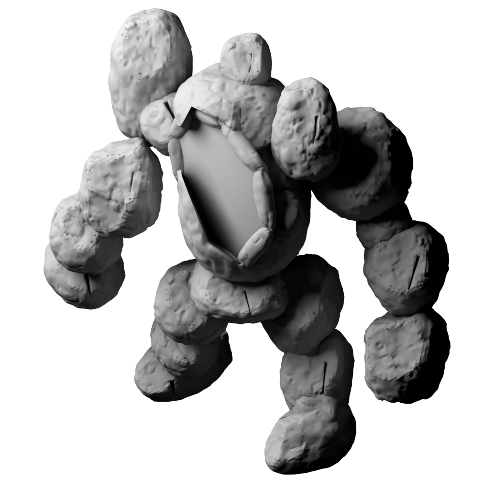
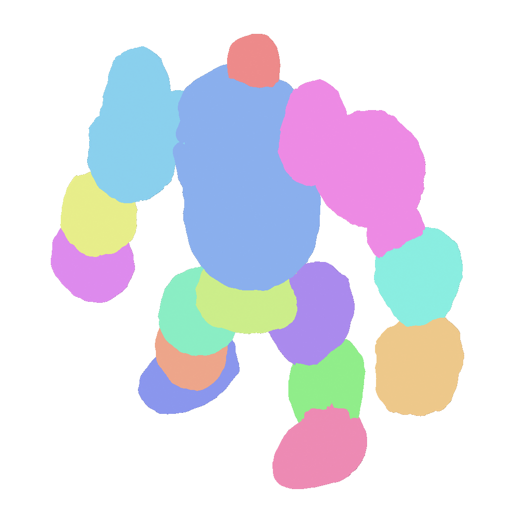
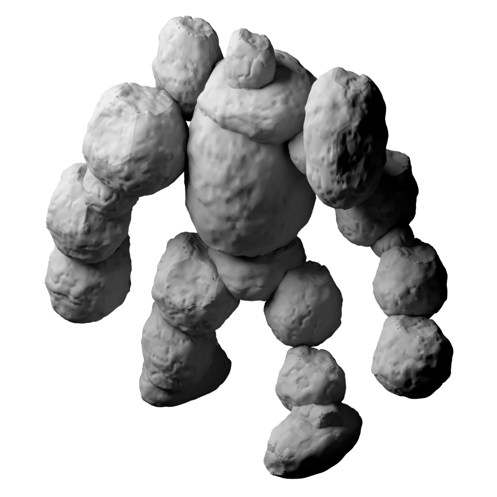
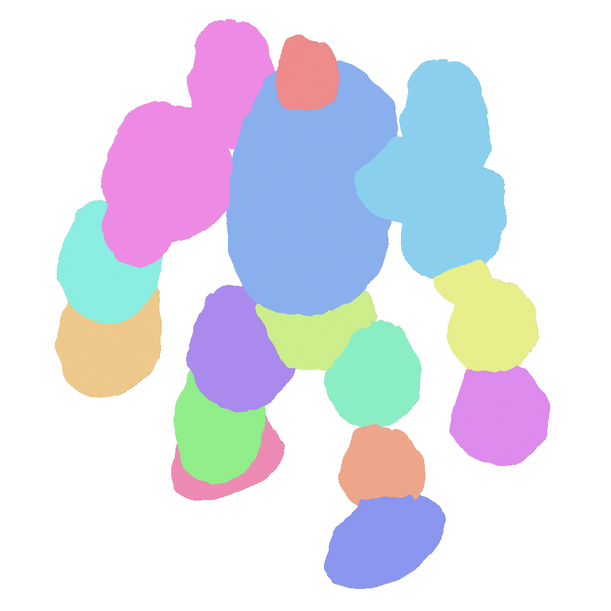

<!doctype html>
<html lang="en"><meta charset="utf-8"><title>mq-08 native shoulder proof</title>
<style>
body {margin:0;background:rgb(24,24,24);color:white}
main {display:grid;grid-template-columns:repeat(3,1024px);width:3072px}
figure {margin:0;width:1024px}
figcaption {box-sizing:border-box;height:32px;padding:8px;
font:12px monospace;white-space:nowrap}
.native {position:relative;width:1024px;height:1024px}
img,svg {position:absolute;left:0;top:0;width:1024px;height:1024px;display:block}
svg {pointer-events:none}
</style><main><figure><figcaption>front: before clay; circles = shoulder joints; crosses = mass tops</figcaption><div class="native"><svg viewBox="0 0 1024 1024" width="1024" height="1024" fill="none" stroke-width="2"><circle cx="722.0" cy="308.0" r="6" stroke="#ffdf50"/><path d="M635.5,159h12M641.5,153v12" stroke="#ffdf50"/><circle cx="280.0" cy="332.0" r="6" stroke="#50e5ff"/><path d="M313.0,17h12M319.0,11v12" stroke="#50e5ff"/></svg></div></figure><figure><figcaption>front: after clay; circles = shoulder joints; crosses = mass tops</figcaption><div class="native"><svg viewBox="0 0 1024 1024" width="1024" height="1024" fill="none" stroke-width="2"><circle cx="722.0" cy="308.0" r="6" stroke="#ffdf50"/><path d="M635.5,159h12M641.5,153v12" stroke="#ffdf50"/><circle cx="280.0" cy="241.7" r="6" stroke="#50e5ff"/><path d="M279.5,93h12M285.5,87v12" stroke="#50e5ff"/></svg></div></figure><figure><figcaption>front: after parts; circles = shoulder joints; crosses = mass tops</figcaption><div class="native"><svg viewBox="0 0 1024 1024" width="1024" height="1024" fill="none" stroke-width="2"><circle cx="722.0" cy="308.0" r="6" stroke="#ffdf50"/><path d="M635.5,159h12M641.5,153v12" stroke="#ffdf50"/><circle cx="280.0" cy="241.7" r="6" stroke="#50e5ff"/><path d="M279.5,93h12M285.5,87v12" stroke="#50e5ff"/></svg></div></figure><figure><figcaption>rear: before clay; circles = shoulder joints; crosses = mass tops</figcaption><div class="native"><svg viewBox="0 0 1024 1024" width="1024" height="1024" fill="none" stroke-width="2"><circle cx="302.0" cy="240.0" r="6" stroke="#ffdf50"/><path d="M376.5,32h12M382.5,26v12" stroke="#ffdf50"/><circle cx="744.0" cy="348.0" r="6" stroke="#50e5ff"/><path d="M690.0,138h12M696.0,132v12" stroke="#50e5ff"/></svg></div></figure><figure><figcaption>rear: after clay; circles = shoulder joints; crosses = mass tops</figcaption><div class="native"><svg viewBox="0 0 1024 1024" width="1024" height="1024" fill="none" stroke-width="2"><circle cx="302.0" cy="240.0" r="6" stroke="#ffdf50"/><path d="M376.5,32h12M382.5,26v12" stroke="#ffdf50"/><circle cx="744.0" cy="306.3" r="6" stroke="#50e5ff"/><path d="M735.5,99h12M741.5,93v12" stroke="#50e5ff"/></svg></div></figure><figure><figcaption>rear: after parts; circles = shoulder joints; crosses = mass tops</figcaption><div class="native"><svg viewBox="0 0 1024 1024" width="1024" height="1024" fill="none" stroke-width="2"><circle cx="302.0" cy="240.0" r="6" stroke="#ffdf50"/><path d="M376.5,32h12M382.5,26v12" stroke="#ffdf50"/><circle cx="744.0" cy="306.3" r="6" stroke="#50e5ff"/><path d="M735.5,99h12M741.5,93v12" stroke="#50e5ff"/></svg></div></figure></main></html>
